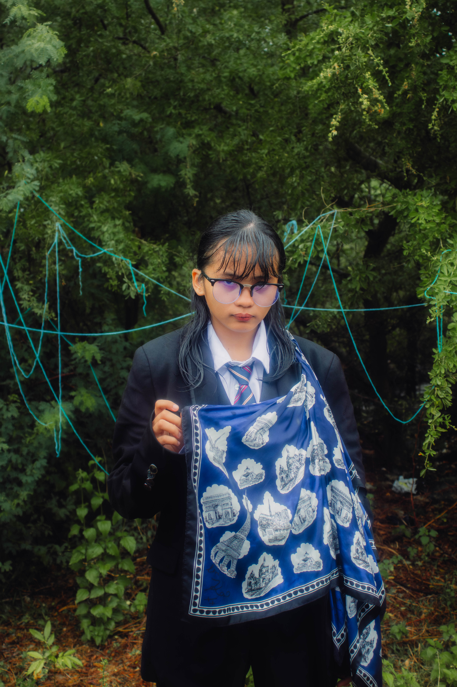
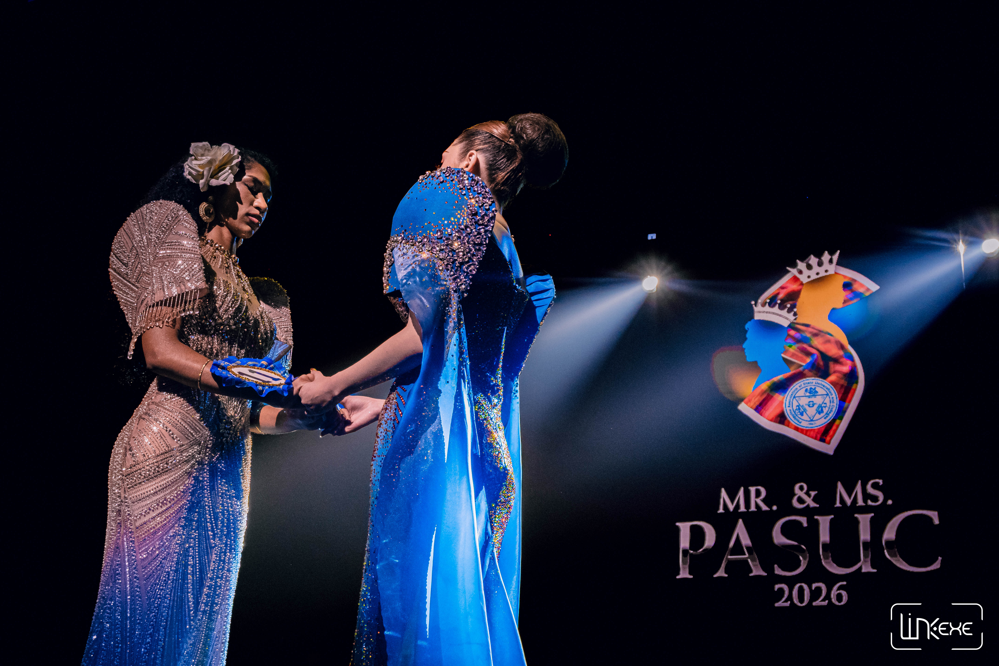
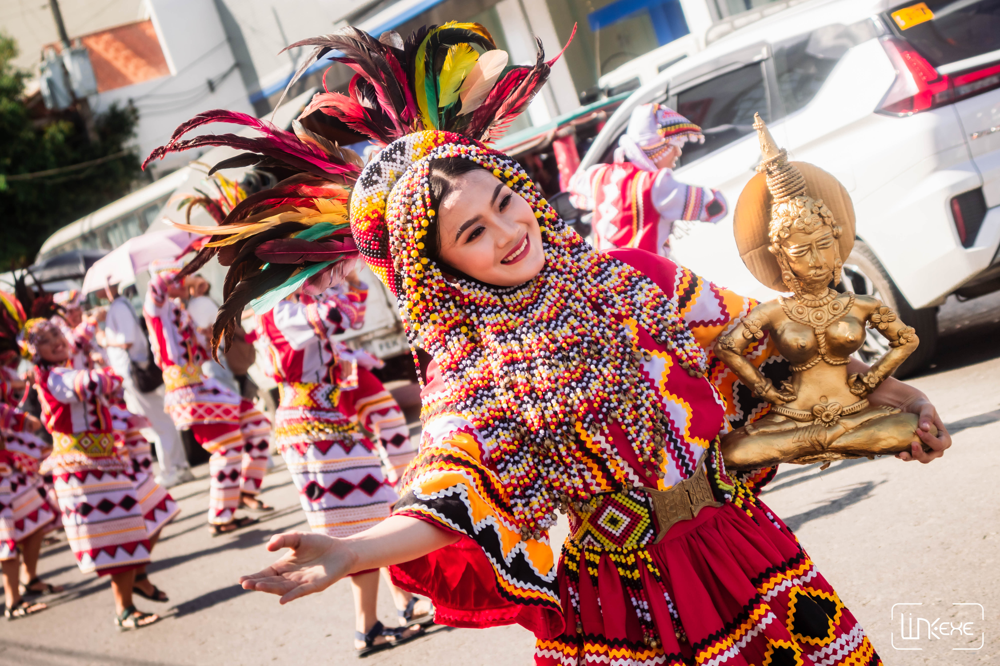
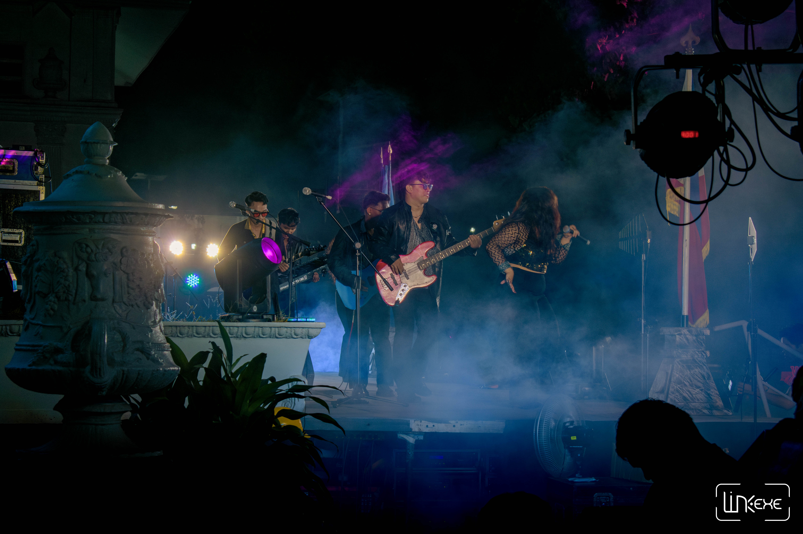
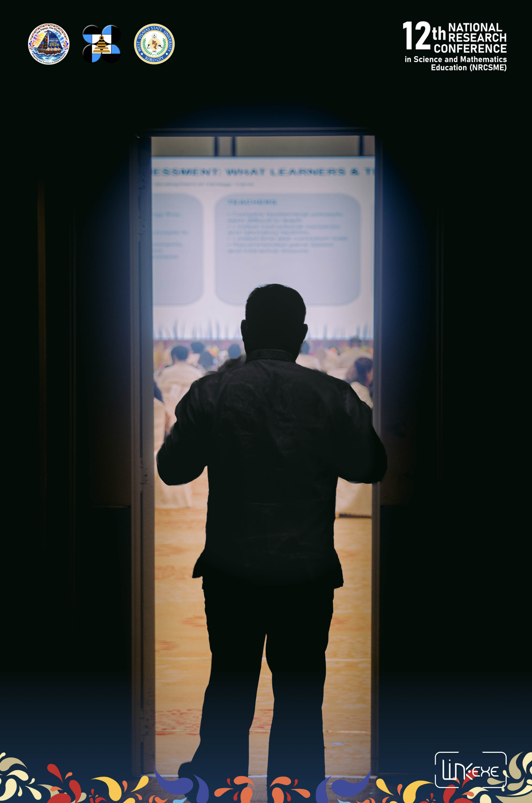
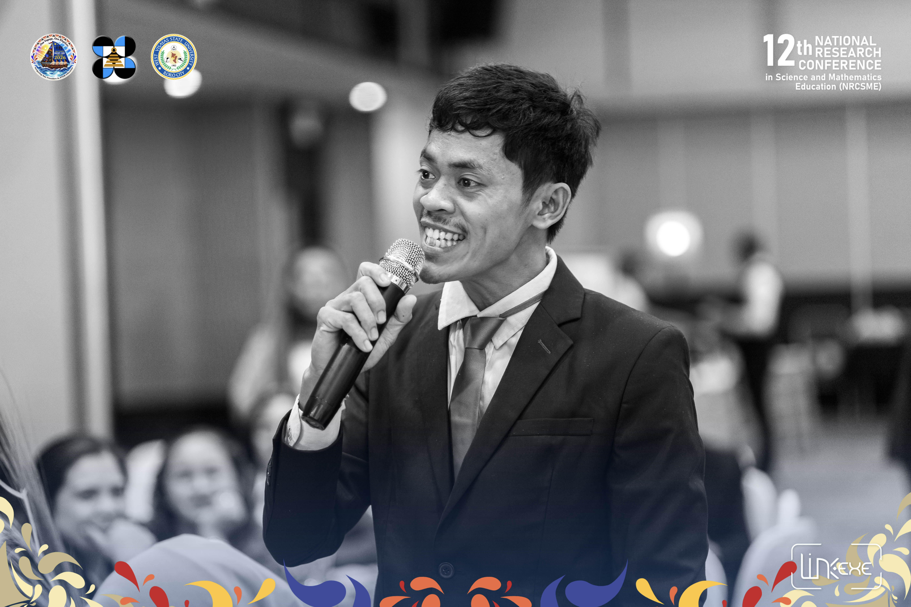

Genshin Impact
An open-world action RPG where I explore Teyvat, build teams, and chase every hidden corner of the map. It's my favorite way to wind down and enjoy world design and music.
A software development student, web builder, and photo editor from Iloilo. A hustler with a hipster's taste.

Add your photoI was born in Molo, Iloilo City, a district known for its heritage church, its pancit Molo, and a community that knows how to look out for each other. That is where I learned to be resourceful, to find a way, and to keep moving.
I'm a hustler: I take on a lot, from coding and editing to writing proposals, and I like seeing things through. I'm also a hipster: I like the off-beat, the well-made, and the details most people scroll past. Those two sides show up in everything I build.
When I'm not coding or editing, I'm usually playing one of these.
An open-world action RPG where I explore Teyvat, build teams, and chase every hidden corner of the map. It's my favorite way to wind down and enjoy world design and music.
A co-op zombie survival shooter. It's fast, chaotic, and all about teamwork: watch your squad's back, stay calm under pressure, and make it to the safe room.
Detective adventure games built on clues, deduction, and connecting small details into the full story. It scratches the same itch as debugging.

assets/edit-1.jpg
assets/edit-2.jpg
assets/edit-3.jpg
assets/edit-4.jpg
assets/edit-5.jpgI'm part of LINK.exe, the student organization under the College of Information and Communications Technology at WVSU, where I serve as the main editor. I shape how the org looks and feels, from event photos to posters and social media visuals.
It started in my second year, second semester. That's when web development stopped being a subject and became something I wanted to do on my own time. I explored layouts, responsive design, JavaScript interactions, and modern tools like Next.js and Tailwind, and each new thing I learned led to three more I wanted to try.
What hooked me is that a website is a design and a working system at once. I can make something look good, then make it useful. That's why I enjoy building real systems, like the transport management system for Itransco, a bus cooperative, covering treasury, payroll, and driver and fleet records.
My ideas rarely arrive as a plan. They start as a small "wait, why is it like this?" while I'm watching how something works, such as how a cooperative handles its payroll, how people get help after a disaster, or how students stay safe online.
From there I ask "what if," keep tossing the thought around, and write it down before it disappears. I connect it to something I already know, whether that's code, design, or a game mechanic, and slowly the thought turns into a concept, then a proposal, then a project. It's messy, but it's how most of what's on my Projects page began.
Systems I've built and programs I've helped plan, from code to community work.
A web app for a bus cooperative, built with Next.js and Tailwind. It handles treasury operations, payroll, and driver and fleet records in one place.
The parent program for LINK.exe's extension work, bringing together a creative program, a digital safety initiative, and a disaster response initiative.
A photography, digital art, and graphic design program for Grade 1 to 12 learners, with a separate design track for LGUs and NGOs.
The membership orientation program that welcomes new LINK.exe members, covering the proposal, schedule, and content.
A thesis and hackathon concept: anonymous, offline Bluetooth Low Energy wearable beacons that help rescuers find people during disasters.
A proposal on how GCash can become the financial backbone for Filipino entrepreneurs.